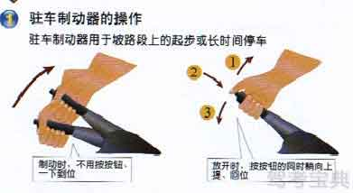

-
1. 拉紧时，右手五指握住手制动拉杆用力向上拉紧,此时仪表盘驻车制动警告灯亮。
-
2. 放松时，右手五指握住手制动拉杆先向上用力提起后，用拇指压下制动拉杆顶端的按钮，再将制动拉杆放松至底部。此时，驻车制动解除，驻车制动警告灯熄灭。


驻车制动器操纵杆是能使汽车本体固定在地面或某平面上而不出现相对移动的总成的操纵装置。是汽车驻车制动器总成的一部分。也称“手制动”、“手刹”、“中央制动器”。
1. 拉紧时，右手五指握住手制动拉杆用力向上拉紧,此时仪表盘驻车制动警告灯亮。
2. 放松时，右手五指握住手制动拉杆先向上用力提起后，用拇指压下制动拉杆顶端的按钮，再将制动拉杆放松至底部。此时，驻车制动解除，驻车制动警告灯熄灭。

不管在任何情况下停车，人离开车时都要拉紧手制动拉杆，应养成良好的习惯。手制动器使用时必须拉紧手制动拉杆，否则起步时易忘记放松手制动拉杆，强行起步行车会造成后制动片的严重磨损。 当车辆起步时，驾驶员感觉车辆起步沉重或不能起步，应首先考虑驻车手制动拉杆是否还未放松，观察驻车制动警告灯是否熄灭。